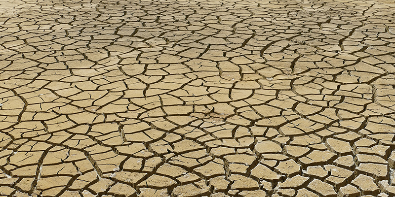

Los bosques son sumideros de carbono. Fuente: MAyDS
Efecto Invernadero
El efecto invernadero es un proceso natural por el cual los gases que están presentes en la atmósfera “atrapan” la radiación que la Tierra emite al espacio. Esta emisión de la Tierra es producto del calentamiento de su superficie por la incidencia de la radiación solar. Los gases de efecto invernadero (GEI) se producen de manera natural y son esenciales para la supervivencia de los seres humanos y de millones de otros seres vivos ya que, al impedir que parte del calor del sol se propague hacia el espacio, la Tierra mantiene cierta temperatura, siendo así habitable. Si estos gases no existieran la temperatura media del planeta sería de -18°C, y la vida en la Tierra no sería posible.
Sin embargo, después de más de un siglo y medio de industrialización, deforestación y agricultura a gran escala, las cantidades de gases de efecto invernadero en la atmósfera se han incrementado y con ello, se incrementó la retención de calor en la atmósfera. El aumento de la temperatura del aire, trae otras consecuencias como lluvias extremas, inundaciones, sequías, derretimiento de glaciares, aumento del nivel del mar, acidificación de los océanos y desertificaciones, aumento de las enfermedades, pérdida de la biodiversidad.
El efecto invernadero - esquema. Fuente: Gobierno de la Ciudad de Buenos Aires
Videos:
¿Qué es el efecto invernadero? - Servicio Meteorológico Nacional (SMN)
¿Qué es el efecto invernadero? - Programa de las Naciones Unidas para el Desarrollo (PNUD)
¿Cambio Climático y bosques - Ministerio de Ambiente y Desarrollo Sostenible (MAyDS)
Cambio climático
El Cambio Climático, es definido por el IPCC como la variación del estado del clima, identificable mediante la modificación del valor medio o en la variabilidad de sus componentes. Un ejemplo de variabilidad, es el cambio de los valores de temperaturas medias. Estos cambios, deben ser persistentes durante largos períodos de tiempo (decenios o más). El cambio climático puede deberse a procesos internos naturales o a forzamientos externos como las modulaciones de los ciclos solares, erupciones volcánicas o cambios antropógenos (causados por el hombre) persistentes de la composición de la atmósfera o del uso del suelo.
Imagen: www.pexels.com

Imagen: www.pexels.com
El Cambio climático puede generar deshielos - Imagen: www.pexels.com
El Cambio climático puede generar episodios meteorológicos y climáticos extremos
Los impactos del Cambio Climático son aquellos efectos producidos sobre los sistemas naturales y humanos de episodios meteorológicos y climáticos extremos y del cambio climático. Los impactos generalmente se refieren a efectos en las vidas, medios de subsistencia, salud, ecosistemas, economías, sociedades, culturas, servicios e infraestructuras debido a la interacción de los cambios climáticos o fenómenos climáticos peligrosos que ocurren en un lapso de tiempo específico y a la vulnerabilidad de las sociedades o los sistemas expuestos a ellos. Los impactos del cambio climático, sobre los sistemas geofísicos, incluidas las inundaciones, las sequías y la elevación del nivel del mar, son un subconjunto de los impactos denominados impactos físicos.
Esquemas
La Tierra sufre por el Cambio Climático - Autor: IPCC
Riesgos climáticos por el incremento de la temperatura global - Autor: WWF
Videos:
Programa Nacional ONU-REDD Argentina (Los bosques y el Cambio Climático)
Cambio Climático y la Contribución Nacional Argentina - Ministerio de Ambiente y Desarrollo Sostenible (MAyDS)
Declaración de la OMM sobre el estado del clima mundial en 2019 - Organización Meteorológica Mundial (OMM)